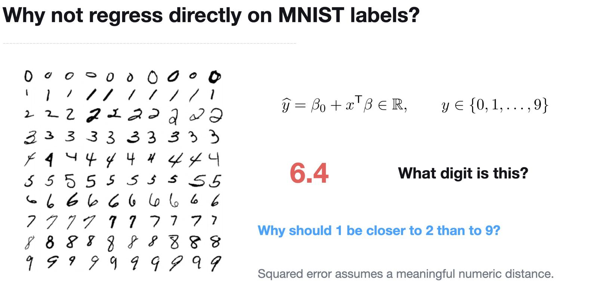
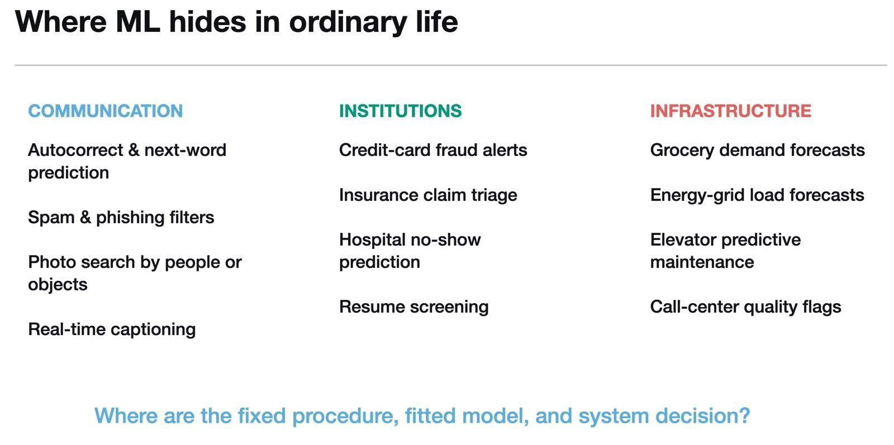

Lesson 0007
Two more words belong on Lesson 0005's vocabulary table: transformer and GPT. Before either means anything, build the shape they sit inside.
| Term | What it actually is |
|---|---|
| Transformer | A neural network family shaped for sequences. Still unfitted — still just {f_θ} until trained. |
| GPT | A specific f^_D — the transformer family, run through the same D --A--> f^_D pipeline, with D = a huge pile of text and A = predict-the-next-word, repeated at enormous scale. |
Before the details — attention, disambiguation, why a transformer counts as a neural network at all — build the shape they all sit inside. Click the terms below, broadest first. GPT won't unlock until the family it belongs to is placed: that's deliberate, not a bug.
Notice what just happened: GPT never became a fifth box. It landed inside the last one — because it isn't a narrower category, it's one trained instance of the category above it. Keep that distinction in view for everything below.
Stack layers and you get a neural network — that alone doesn't make it a transformer. Shape those layers around sequences, and let each word's meaning get computed by weighing every other word in the input, not just its neighbor, and you get attention — the mechanism a transformer is built around.
"The bank raised interest rates." Read "bank" alone and it's ambiguous — a riverbank, or a financial one. Attention lets "interest rates," several words away, pull hard on how "bank" gets interpreted here — locking in the financial reading before the sentence is even finished. A plain MLP, fed the words with no such weighing, has no built-in way to let a distant word settle a nearby word's meaning.
Same nest you already built: ML is the field. A neural network is one model family inside it. A transformer is one architecture inside that family — built specifically for sequences, via attention. GPT sat inside the narrowest box, not beside it — the output of training that box, not a box of its own.
None of this makes the model the thing it's modeling. George Box, a statistician, put the whole lesson in one line:
"Essentially, all models are wrong, but some are useful."
A perceptron is wrong about XOR. A straight line is wrong about the ring dataset from Lesson 0005. And picking a family that doesn't match your data's structure is its own classic misstep — not a new one, an old one, back from before this lesson's models existed:

For each item below, ask Lesson 0001's question: what's the fixed procedure, what's the fitted model, what's the deployed decision?

Answer from memory first — that's the part that makes it stick.